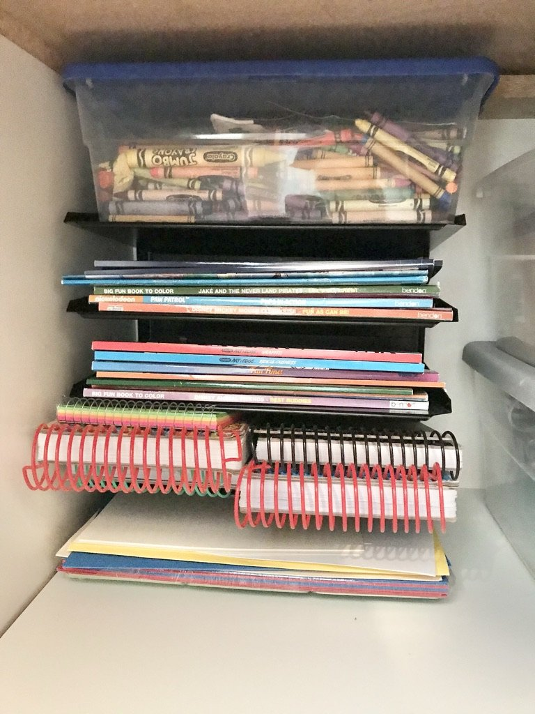
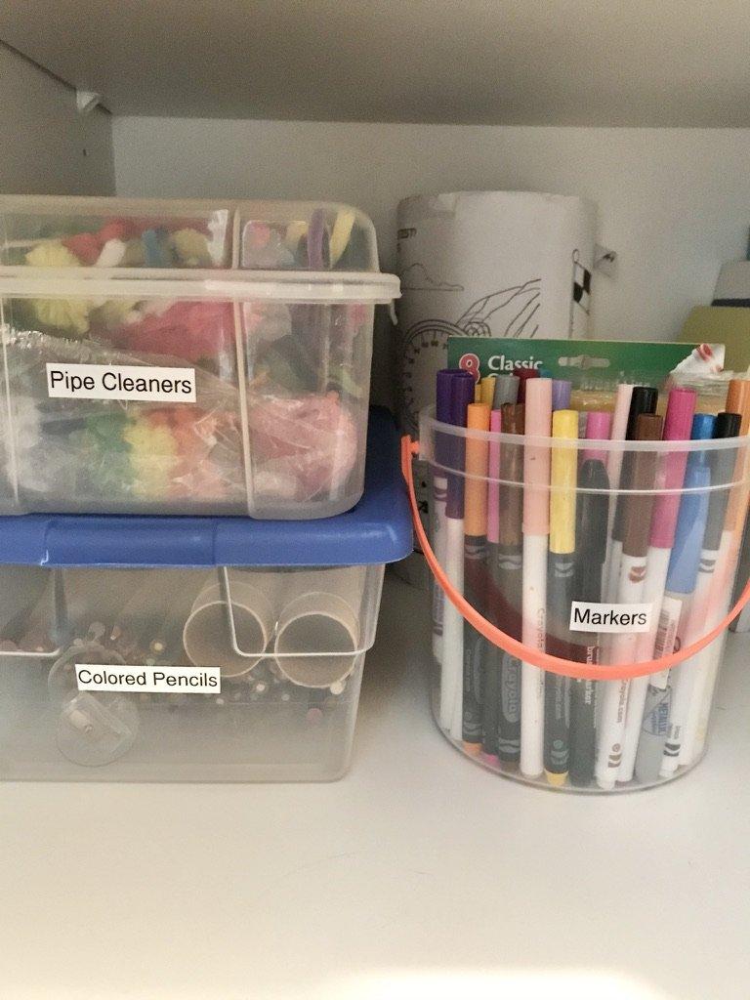

Top 3 Back to School Organization Tips
As the summer days wind down, it's time to start thinking about getting back into the school routine. We know that transitioning from lazy summer days to the structured school year can be a challenge, so we're here to help. In this newsletter, we'll be sharing our top three tips for back-to-school organization.
Before the school year begins, it's crucial to declutter and simplify your home. Here's how:
#1: Room-by-Room Purge: Start by going room by room, including bedrooms, living spaces, and playrooms. Donate, recycle, or discard items that are no longer needed or used. This will create more space and reduce clutter.
#2: Closet Clean-out: Tackle your kids' closets. Donate clothing that no longer fits or is out of season. Organize their closets with an eye for accessibility, making it easier for them to choose their outfits each morning.

#3: School Supplies Inventory: Take stock of school supplies from the previous year. Check what can be reused, and create a shopping list for the items you need. Don't forget to label everything with your child's name.
#4: Paperwork Organization: Set up a system for school paperwork. Designate a place for permission slips, homework assignments, and important school documents. Consider using a binder or folder for each child.
By decluttering and simplifying your home, you'll create a more peaceful environment that sets the stage for a successful school year. Its now time to establish Routines and Schedules, heres how.
#5: Morning Routine: Set a consistent morning routine that includes time for breakfast, getting dressed, and packing backpacks. This will help your kids start the day with less chaos and more focus.
#6: Homework Time: Designate a specific time and place for homework. Create a quiet, well-lit study area with necessary supplies readily available. Stick to a routine to ensure homework is completed on time.
#7: Extracurricular Activities: Plan and schedule extracurricular activities carefully. Make a family calendar that includes school events, sports practices, music lessons, and other commitments. This visual aid will help everyone stay organized.
#8: Meal Planning: Plan your meals in advance. Create a weekly menu and grocery list to save time and reduce stress. Consider batch cooking and freezing meals for busy evenings.
#9: Nighttime Routine:Establish a calming nighttime routine that includes reading or quiet activities. This will help your kids wind down and get a good night's sleep, essential for their success at school.
By setting up routines and schedules, you'll create a structured environment that supports your family's well-being and academic success. Now it’s time to create Efficient Study Spaces and Organize School Supplies, heres how.

#10: Designated Study Area: Set up a designated study area for your kids. Ensure it's well-lit and free from distractions. A comfortable chair and an organized desk or table will make homework time more productive.
#11: School Supply Organization: Invest in storage solutions like bins, baskets, or caddies to keep school supplies organized. Label everything clearly so that it's easy to find when needed.
#12: Backpack Organization: Teach your kids how to keep their backpacks organized. Regularly check backpacks for unnecessary items and make sure everything has its place.

#13. Digital Organization: Don't forget digital organization. Create folders on your computer or cloud storage for school-related documents and assignments. This will make it easier to find and submit electronic materials.
#14. Regular Clean-outs: Schedule regular clean-outs of your kids' study spaces and backpacks. This will prevent clutter from building up over time.
By implementing these strategies, you'll create an environment that fosters productivity and ensures your children are well-prepared for school. We hope these tips help you with your back-to-school preparations.e it stand out